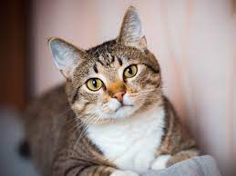

Jose Robertinho
Encontramos este gato en acapulco en estado crítico y nececitaba atención medica. Tenía dos tipos de cancer de un tumor, gracias a dios lo pudimos salvar y ahora está en condiciones para conocer a su nueva familia.

Fabricio
Sus dueños anteriories lo dejaron en la protectora porque les cagaba toda la casa. Nosotros lo domesticamos para que haga sus necesidades afuera.

Valentina
Sus dueños la dejaron en la calle porque muerde a las visitas, hace sus necesidades adentro de la casa y no para de ladrar. Nosotros nos encargamos que no muerda a las personas, que haga sus necesidades afuera y que no ladre a todos.